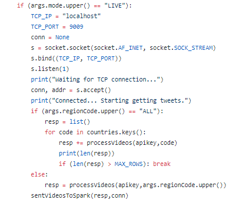
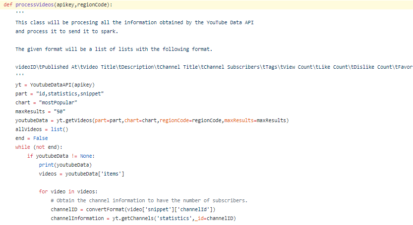
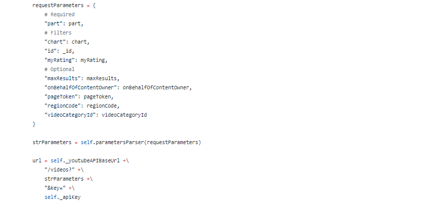
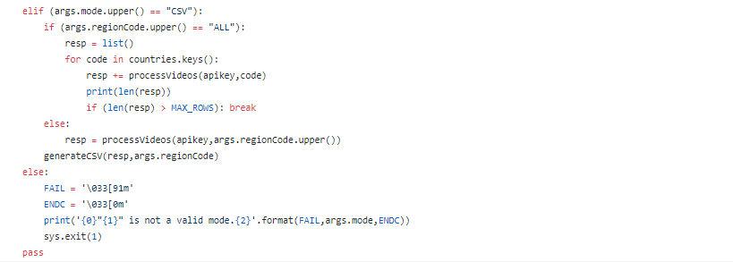

Si utilizamos el modo LIVE, primero tenemos que señalar cual es nuestra IP y el puerto para poder recoger los datos en la red. Una vez conectados, podrá darse dos situaciones: Que el usuario haya indicado un país en concreto o que el usuario quiera todas las regiones. Dependiendo de eso, se hará una cosa u otra
¿Cómo procesamos los videos? Pues con una api key (dada por google en la consola de administración), y el código de la región realizamos el proceso. Primero creamos una clase YoutubeDataAPI donde está todo lo relacionado con las API de youtube. Esta clase es la encargada de recoger todos los datos de los videos y canales de youtube
Una vez creada, recoge los datos de los videos y de los canales de youtube de esa región y los guarda en una lista. Aquí podemos ver una parte de código de cómo recoge los videos
Una vez obtenido todos los videos que queremos, ya podemos analizarlos
En el caso de que no queramos conectarnos a ninguna red, simplemente guardarlo en un CSV, procesamos directamente los datos de los videos y lo transformamos en un CSV
Una vez obtenido el CSV ya podemos analizarlos de forma local